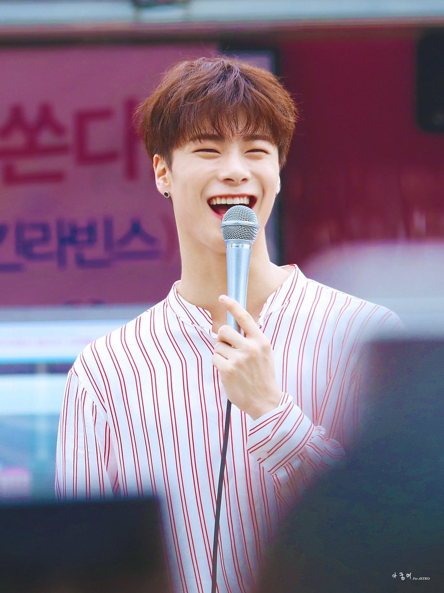

Stage name
Position
Birthday
Zodiac Sign
Birthplace
Height
Weight
Blood type
Specialties
|
Moonbin
Lead Vocalist, Lead Dancer
January 26, 1998
Aquarius
Cheongju, Chungbuk, South Korea
183 cm
64 kg
B
Piano, Acting, Water Sports, Dancing,
|
FUN FACTS!

- Shoe Size: 255
- Personality: tender and warmhearted
- His nicknames are: U-Know MoonBin, Binnie, Sleepyhead
- In 2006 he appeared in DBSK's Balloons MV (as Mini U-Know Yunho)
- He was child model, ulzzang and actor.
- In 2007 he appeared on SBS Star King as Mini DBSK - UKnow Yunho
- He debuted in 2004 as child model.
- Moonbin doesn't like raw fish.
- Auditioned for JYP Ent. with iKON Donghyuk, Yang Hongseok, and Kim Jisoo (actor)
- Moonbin has an excellent olfactory sense (has a good sense of smelling).
- His hobby is playing video games.
|